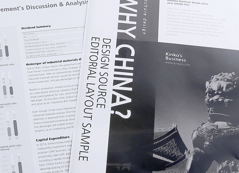
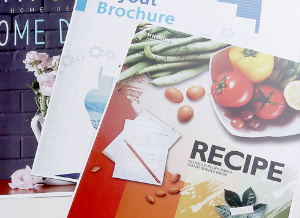
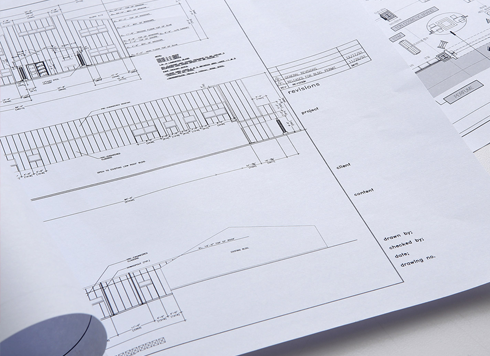

서비스 안내
킨코스에서는 고객님의 비즈니스를 위해 최고의 서비스를 제공합니다.
디지털 출력&복사
흑백복사&프린트, 컬러복사&프린트, 흑백대형사이즈 복사&프린트 등
다양한 사이즈와 종이에 출력 및 복사가 가능합니다.

흑백 출력&복사
- 한 장에서부터 많은 양의 자료도 언제든지 신속하게 복사 할 수 있습니다.
- 센터에 준비된 다양한 용지로 보다 품질을 높일 수 있습니다.

컬러 출력&복사
- 프리젠테이션 자료 및 보고서를 만들거나, 긴급한 주문에도 고객의 요구에 따라 최적의 제안을 드리겠습니다.
- 대형 사이즈의 출력도 가능하며 Signs & Graphics 서비스를 참조 하십시오

투명비닐
적절한 두께감과 함께 투명도가 매우 높으며, 광택 처리되어 내용물을 더욱 선명하고 눈에 띄게 만들어 줍니다.

대형 사이즈 출력 & 복사
- 컬러대형출력은 킨코스 전 센터에서 가능합니다.
- 확대 및 축소 복사,출력 가능하며 폼보드,판넬,코팅 등의 후가공 서비스도 이용하실 수 있습니다.
- 흑백대형출력 및 복사가 가능하며, 600DPI 스캔도 지원 됩니다.
- 흑백이나 컬러로 스캔 후 파일 저장도 가능합니다.(PDF,TIFF,JPEG)
※ CAD 가능센터 : 동여의도, 신사, 홍대 센터.